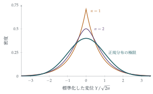

STEP III 2008、第12問
先に進む前に問題を読んでおこう。問題は STEP Support Programme の問題データベースにある： step.maths.org/questions/08-s3-q12
導入
互いに独立な小さな確率的効果を数多く足し合わせると、個々の分布が何であれ、その合計は釣鐘型の正規分布（normal distribution）の曲線に従う。これが中心極限定理（central limit theorem）であり、確率論でおそらく最も重要な定理である。身長や測定誤差や試験の点数がおおよそ正規分布に従う理由も、統計学者がもとの分布について何も知らなくても、その分散（variance）が有限でありさえすれば平均値がどれほど信頼できるかを述べられる理由も、この定理で説明される（第 12.22 節 と比較せよ）。
この問題では、特別な場合にこの定理を証明する。1 匹のカエルが両側指数分布（two-sided exponential distribution）に従ってランダムに跳ぶ。その密度は鋭く尖ったピークをもち、釣鐘型とは似ても似つかない。それでも何度も跳んだあとのカエルの変位の合計は正規分布に従う。道具となるのは積率母関数（moment generating function）である。積率母関数は独立な確率変数の和を積に変え、さらに対数をとれば積は和に変わる。
積率母関数は 2019 年に STEP の出題範囲から外された。確率変数 \(X\) の積率母関数は \(\mathrm{M}_X(\theta) = \mathrm{E}(e^{\theta X})\) である。その \(0\) における導関数から積率（モーメント）が得られる：\(\mathrm{M}'(0) = \mathrm{E}(X)\)、\(\mathrm{M}''(0) = \mathrm{E}(X^2)\)。独立な \(X\) と \(Y\) に対しては \(\mathrm{M}_{X+Y} = \mathrm{M}_X\mathrm{M}_Y\) であり、また \(\mathrm{M}_{cX}(\theta) = \mathrm{M}_X(c\theta)\) である。積率母関数が収束すれば、分布も（適切な意味で）収束する。
取りかかる前に
密度 \(\frac12e^{-|x|}\) は対称である。そのグラフはどのような形か。平均（mean）はいくらか。
これはテントのような形の曲線で、\(0\) に高さ \(\frac12\) の鋭いピークをもち、両側に指数関数的に減衰する（図 12.24.1）。対称性より平均は \(0\) である。
順を追って解く
段階 1 積率母関数
\(|\theta| < 1\) のとき、積分を \(0\) で分けると \[\mathrm{M}_X(\theta) = \frac12\int_{-\infty}^0e^{(1 + \theta)x}\,\mathrm{d}x + \frac12\int_0^\infty e^{-(1 - \theta)x}\,\mathrm{d}x = \frac12\Bigl(\frac{1}{1 + \theta} + \frac{1}{1 - \theta}\Bigr) = \frac{1}{1 - \theta^2}. \qed\] 展開すると \(\mathrm{M}_X(\theta) = 1 + \theta^2 + \theta^4 + \cdots\) となるので、\(\mathrm{E}(X) = 0\) であり、\(\mathrm{E}(X^2) = 2\)（\(\frac{\theta^2}{2!}\) の係数）である。分散は \(2\) である。
段階 2 カエルの変位
\(Y = X_1 + \cdots + X_n\) の積率母関数は何か。\(Y/\sqrt{2n}\) の積率母関数はどうか。
独立性より \(\mathrm{M}_Y(\theta) = (1 - \theta^2)^{-n}\) であり、尺度を変えると \[\mathrm{M}_{Y/\sqrt{2n}}(\theta) = \mathrm{M}_Y\Bigl(\frac{\theta}{\sqrt{2n}}\Bigr) = \Bigl(1 - \frac{\theta^2}{2n}\Bigr)^{-n}.\] となる。（\(Y\) の標準偏差（standard deviation）である \(\sqrt{2n}\) で割ることで、分散が \(1\) になる。）
段階 3 極限
対数をとり、小さな \(u\) に対して \(\ln(1 - u) \approx -u\) を用いよ。
\(\ln\mathrm{M}_{Y/\sqrt{2n}}(\theta) = -n\ln\bigl(1 - \frac{\theta^2}{2n}\bigr) = -n\bigl(-\frac{\theta^2}{2n} - \frac{\theta^4}{8n^2} - \cdots\bigr) \to \frac{\theta^2}{2}\) であるから \[\mathrm{M}_{Y/\sqrt{2n}}(\theta) \to e^{\theta^2/2}, \qed\] となり、これは標準正規分布の積率母関数である。
段階 4 カエルの確率
\(n\) が大きいとき、\(Y\) は近似的に \(\mathrm{N}(0, 2n)\) に従う。\(\mathrm{P}(|Y| \geq 25) = 0.05\) となるのはいつか。
標準正規分布に従う \(Z\) に対して \(\mathrm{P}(|Z| \geq 1.96) = 0.05\) である。よって \(\frac{25}{\sqrt{2n}} = 1.96\) が必要であり、\(2n = \bigl(\frac{25}{1.96}\bigr)^2 \approx 162.7\)、すなわち \(n \approx 81.3\) を得る。遠くに着地する確率は \(n\) とともに増えるので、少なくとも \(5\%\) の確率を与える最小の跳躍回数はおよそ \(82\) である。■

振り返り
変換は和を積に変える。独立な確率変数の和の積率母関数は、それぞれの積率母関数の積である。
対数は積を和に変える。\(\ln\bigl(1 - \frac{\theta^2}{2n}\bigr)^{-n}\) は、極限の求めやすい和になった。
標準化せよ。標準偏差 \(\sqrt{2n}\) で割ることで分散が \(1\) に保たれ、極限が \(0\) にも無限大にもならなかった。
背後にある数学
一般の定理
同じ議論は、平均が \(0\) で有限の分散 \(\sigma^2\) をもつ任意の分布に対して成り立つ（積率母関数の存在も仮定するが、この仮定は外すことができる）。このとき \(\mathrm{M}(\theta) = 1 + \frac12\sigma^2\theta^2 + o(\theta^2)\) であり、 \[\Bigl(\mathrm{M}\Bigl(\frac{\theta}{\sigma\sqrt n}\Bigr)\Bigr)^n = \Bigl(1 + \frac{\theta^2}{2n} + o\Bigl(\frac1n\Bigr)\Bigr)^n \to e^{\theta^2/2}.\] となる。極限で生き残るのは分散だけであり、もとの分布の形は忘れ去られる。正規分布が普遍的である理由はここにある。大学では、この定理は常に存在する特性関数（characteristic function）\(\mathrm{E}(e^{i\theta X})\) を用いて証明され、分布の収束はレヴィ（Lévy）の連続性定理によって厳密に述べられる。
収束の速さは？
中心極限定理は極限で何が起こるかを述べるが、どれだけ速く収束するかは述べない。ベリー・エッセーンの定理（Berry–Esseen theorem）は、誤差を定数と \(\frac{\mathrm{E}|X|^3}{\sigma^3\sqrt n}\) の積で上から評価する。カエルの分布のような対称な分布では、数十回跳べば近似は良好になる。歪んだ分布や、分布の裾の極端な部分では、\(n\) が大きくても近似が悪いことがある。正規近似は非常にまれな事象の確率を過小評価するのであり、この事実は保険や金融に影響を及ぼす。
ド・モアブル（de Moivre）は 1733 年に二項分布の正規近似を発見し（第 12.23 節）、ラプラス（Laplace）は 1810 年にそれをより一般の確率変数の和へと拡張して、測定誤差は多くの小さな効果の和であるという考え方を打ち出した。厳密な証明が得られたのはずっと後のことである。1901 年にアレクサンドル・リャプノフ（Aleksandr Lyapunov）が、そして 1922 年にヤール・リンデベルグ（Jarl Lindeberg）が証明を与え、リンデベルグは定理が成り立つための本質的に最も弱い条件を見いだした。「中心極限定理」という名前は 1920 年にジョージ・ポリア（George Pólya）によって付けられたもので、この定理が確率論の中心にあるという意味である。
思考のスキル
難しい演算（独立な確率変数を足すこと。これは密度の畳み込みにあたる）は、変換を施すと易しい演算（掛け算）になる。変換した先で計算を行い、その結果を解釈せよ。
同じ戦略は、母関数（第 9.4 節）、解析学や工学におけるフーリエ（Fourier）変換やラプラス変換、そして掛け算を足し算に変える対数の根底にもある。
次の一歩
2 回跳んだ場合の厳密な計算。\(Y = X_1 + X_2\) の密度が \(\frac14(1 + |y|)e^{-|y|}\) であることを示し、その分散が \(4\) であることを確かめよ。
二項分布から正規分布へ。\(X \sim \mathrm{B}(1, \frac12)\) を平均が \(0\) になるように平行移動したもの（値 \(\pm\frac12\) をとる）について、\(\mathrm{M}_X(\theta) = \cosh\frac\theta2\) を求め、そのような確率変数 \(n\) 個の和を標準化したものの積率母関数が \(e^{\theta^2/2}\) に近づくことを示せ。
カエル、厳密に。コンピュータを使って（あるいは検算として \(n = 2\) のときの厳密な密度を使って）、\(n = 82\) のとき正規近似がどれほど正確かを調べよ。
なぜコーシー分布ではだめなのか。コーシー分布（第 12.22 節）は積率母関数をもたない。議論のどの段階が破綻するか。また、\(n\) 個のコーシー分布に従う確率変数の平均はどうなるか。
さらに学ぶために
Geoffrey Grimmett & Dominic Welsh, Probability: An Introduction（Oxford University Press）。母関数と極限定理の章。
Hans Fischer, A History of the Central Limit Theorem（Springer）。中心極限定理の歴史。ラプラスからリンデベルグまで。
David Spiegelhalter, The Art of Statistics（Pelican）。統計学の技法。正規分布がいたるところに現れる理由について。